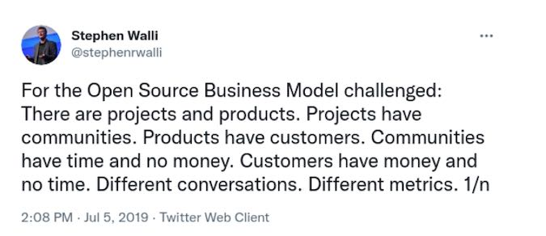

基于开源项目构建产品的思考
https://opensource.com/article/21/10/open-source-product-market
Projects & Products

https://opensource.com/article/20/10/open-source-supply-chain
产品还是项目？
如果您接受开源是构建解决方案的供应链，这会导致对项目和产品的另一种误解。Red Hat 的 CEO Paul Cormier 对开源项目和开源产品做了务实的区分。虽然我同意 Paul 的观点，但我不得不承认，世界上大多数人都没有意识到这种明显的区别。在与客户、合作伙伴、用户、贡献者、分析师、记者，甚至我自己家人的 20 年对话中，大多数人交替使用项目和产品这两个词。
我将尝试通过提出一个简单的定义来澄清问题：产品是人们用货币购买的东西，而项目是人们参与、贡献或使用的东西。这是获得更好定义的一部分，但要真正理解，您需要定义什么是产品，以便清楚地了解项目不是什么。
与任何其他产品或服务一样，软件产品需要进行大量活动才能将其推向市场。他们有商业计划、定价和包装、定位和消息传递、分销策略、销售支持、投资组合调整、构建/购买/合作伙伴决策和路线图。管理这些产品的团队组织焦点小组，分析目标市场，向记者和分析师简要介绍他们的产品如何适应市场，引导客户完成路线图，最重要的是，根据付费客户的需求定义这些路线图。产品团队花费大量时间和金钱来了解客户的问题，但这很少是社区成员的工作成果。
产品团队对他们在产品中使用哪些供应商有基本的选择权。这可能意味着在一个产品中使用两个、三个、四个甚至 10 个不同的上游项目。这也可能意味着当上游项目不再满足购买产品的客户的需求时，他们就会切换上游项目。最后，它还可能意味着定位合作伙伴的解决方案或产品组合的不同部分以填补空白（即，通过解决方案满足客户需求）。产品团队还可以决定使用开源作为供应链的一部分，而将专有软件作为另一部分，从而将产品与项目区分开来。他们甚至可以将他们的产品仅作为服务提供；这就是定价和包装的力量。
几乎所有产品都是通过向供应商提供的一组商品组件添加一层差异化价值来构建的。这是事实，无论它们是基于开源还是专有组件构建的。换句话说，上游供应商无法提供与下游产品相同的解决方案。当上游项目和下游产品解决完全相同的业务问题时，差异很小，这会带来挑战。这就好比上游供应商和下游产品公司都卖轮胎——上游供应商要卖轮胎，下游产品公司要卖车。
供应链组件和下游产品之间缺乏差异化是开源公司遇到问题的地方。
每天，产品团队都必须在付费客户的推动下做出定价、包装、构建、购买、合作伙伴和路线图决策。这就是为产品提供差异化并使其从根本上不同于社区驱动的开源项目的原因。
换句话说，在开源软件上构建产品不是免费的。不是花 时间就是花钱，谁都知道时间就是金钱，所以这些本质上是一回事。因此，使用“购买”一词来描述产品团队与为这些产品提供技术的上游开源项目之间的关系是真正正确的。
从产品团队的角度来看，每个上游项目都可以看作是一个供应商。产品团队可以通过贡献工程师、文档编写者、测试人员等的时间和精力，从开源供应商那里“购买”。由于时间就是金钱，花在上游工作上的每一小时都可以用美元来衡量。
无论您的组织是销售基于开源的产品还是为内部消费构建解决方案，这种从开源供应链中消费的成本都存在。在开源上构建任何东西都对选择和使用的组件负有隐性责任。但是，与传统供应链不同的是，一美元可能不是一美元（填写您选择的货币）。
投资于开源供应链采购的每一美元都可能获得 2 美元、3 美元甚至 10 美元的回报。投资回报率可能会更高，因为其他人和公司也在贡献价值，以及多样化的想法。从开源供应链中消费的每个人都继承了总价值。如果社区是健康的，那么获得的价值将远远超过所做的贡献。
从开源供应商处采购还有另一个隐藏的好处。与传统供应商不同，社区驱动的开源项目不是具有销售、营销和进入市场成本的利润驱动实体。这类似于从非营利实体购买，但再一次，它不是“像啤酒一样免费”。从开源供应链采购并反过来向您的客户提供产品肯定会产生成本。
各位产品经理，我敦促你们开始考虑将开源项目作为你们产品的供应链。它将使您在做出产品驱动的决策和关注业务需求而不是技术时更加清晰。对于所有供应链，产品经理必须公平对待他们的供应商。例如，下游产品团队无法告诉上游供应商该做什么。下游产品团队还必须向供应商支付足够的费用，以维持他们的业务并继续提供技术。这些只是将上游开源项目视为供应商所带来的清晰度的两个例子，它使关系更加健康。
https://opensource.com/article/20/10/defining-product-open-source
为了解释差异化价值，我将使用汽车类比。家庭需要汽车、运动型多用途车 (SUV) 或小型货车。他们可能想要舒适的座椅、信息娱乐系统或安全功能。他们通常对颜色有偏好。每个家庭都是不同的并且有特定的需求，因此完美的汽车应该是家庭作为一个项目共同打造的。
大多数家庭没有时间、意愿、金钱或信用来购买从头开始制造完美汽车所需的所有组件，更不用说在给定的生命周期内维护它的时间了。对于一个家庭来说，这不是一项经济的时间或金钱投资。这会花费他们更多的钱，并且需要很长时间才能建造。相反，家庭从现有供应商那里购买汽车，作为解决交通问题的内置解决方案。买的车虽然不完美，但用更少的时间和金钱就能大致满足他们的需求。
汽车供应商将解决方案与无差别和有差别的组件放在一起。这包括从发动机、燃油喷射器、轮胎和汽车座椅到汽车经销商处的购买体验、融资和拥有汽车时的服务计划的一切。所有这些功能和体验都是家庭在寻找汽车时购买的解决方案的组成部分。所有这些东西的结合产生了一些不同的东西，并且希望在市场上更好。我们称此为差异化。竞争解决方案越多，市场差异化越大，一个家庭找到更接近其需求的汽车的机会就越大。